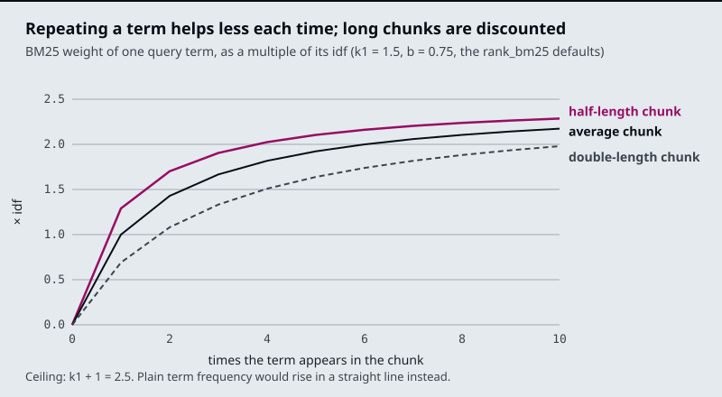
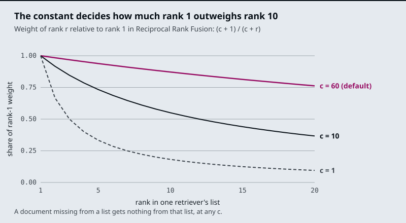

The running example is the Larkspur Cloud handbook from M11 to M13, now searched with two kinds of question. Some are worded unlike the handbook, such as What happens if my server goes down?, whose evidence talks about “outage” and “availability”; the dense retriever is built for these. Others hang on an exact string, such as an order ID like ORD-88213, which the M11 symptom table already sends to this module; BM25 is built for these. The lab’s golden set mixes both kinds: paraphrase questions, and questions that name an error code such as E-4021.
TL;DR
- Dense retrieval compares embedding vectors and matches paraphrase; sparse retrieval (BM25) scores shared tokens and matches exact terms. Each misses what the other finds, so production retrieval usually runs both.
- BM25 is TF-IDF with two corrections: repeated terms saturate (
k1, 1.5 by default inrank_bm25) and long chunks are discounted (b, 0.75). LangChain’sBM25Retrieversplits on whitespace only, soapplication.andapplicationare different tokens. - Fusing two rankings by weighted min-max scores (
03a,alpha = 0.5) depends on each retriever’s score scale. Reciprocal Rank Fusion uses ranks only:EnsembleRetrieveraddsweight / (60 + rank)per list. With equal weights of 1, a chunk ranked 3rd by both retrievers (2/63 = 0.0317) beats one ranked 1st by only one (1/61 = 0.0164). - MMR picks the most similar chunk first, then trades relevance against redundancy with
lambda_mult(0.5 by default) overfetch_kcandidates (20 by default). - Filters on metadata, score, keywords and diversity shrink the context after retrieval. Score thresholds belong to one embedding model; re-tune them when the model changes.
Mental model
- A question arrives with ordinary words and an exact string, such as an order ID.
- BM25 ranks the chunks that share the question’s exact tokens. The chunk holding the ID comes first.
- The embedding retriever ranks chunks by meaning, so a chunk worded differently from the question can come first.
- Fusion merges the two lists into one, by rank (RRF) or by normalised score. Both first places can now sit near the top.
- Metadata and score filters drop chunks that cannot be right, such as a superseded policy.
- MMR replaces near-copies of a chunk already chosen with chunks that add something new.
- The top k chunks go to the model, or to a reranker first (M19).
Two retrievers rank the same chunks by different evidence, and fusion turns two ranked lists into one. Fusion only reorders what the two retrievers returned: a chunk that neither puts in its top k is gone before the merge, so give each retriever a wider k than the final one.
Search modes
Lesson 17.1: The retriever interface and its search modes. Notebooks: 01a_retrievers.ipynb
A LangChain retriever takes a query string and returns a list of Documents through invoke(query). That one signature is why retrievers stack: a wrapper that calls another retriever and post-processes its list is itself a retriever, so a chain cannot tell a plain vector search from a hybrid, compressed, multi-query one.
vectorstore.as_retriever(search_type=..., search_kwargs=...) turns a vector store into a retriever. 01a builds a twelve-sentence Chroma store with text-embedding-3-small and tries each mode on questions such as what is the old capital of India?:
| Mode | How 01a builds it |
What it returns |
|---|---|---|
| Similarity | search_type="similarity", k=3 |
The 3 nearest chunks, however far away they are |
| MMR | search_type="mmr", k=3, fetch_k=10 |
3 of the 10 nearest, chosen to differ from each other (17.4) |
| Score threshold | search_type="similarity_score_threshold", k=3, score_threshold=0.3 |
Up to 3 chunks, only those with relevance ≥ 0.3; possibly none |
| Multi-query | MultiQueryRetriever.from_llm(retriever, llm) |
The union of results for several LLM-written rewordings of the question |
| Contextual compression | ContextualCompressionRetriever with LLMChainExtractor or LLMChainFilter |
The same chunks cut down to the relevant sentences, or only the chunks an LLM judges relevant |
| Ensemble | EnsembleRetriever(retrievers=[...], weights=[0.7, 0.3]) |
One list merged from several retrievers by weighted Reciprocal Rank Fusion (17.3) |
Similarity search always returns k chunks. Ask the twelve-sentence store about something it does not hold and you still get three sentences back; ask the Larkspur handbook index about a product Larkspur does not sell and the model still receives three handbook chunks. A score threshold is the first defence against that, and it is easy to get wrong because stores report scores in two directions:
similarity_search_with_scorereturns a distance: lower is closer.01asetscollection_metadata={"hnsw:space": "cosine"}because Chroma uses Euclidean distance unless told otherwise.similarity_search_with_relevance_scores, and thescore_thresholdmode built on it, use a relevance score: higher is closer. For cosine, Chroma’s_select_relevance_score_fn()computes1 - distance, so the distance0.35375in01abecomes a relevance of0.64625.
01a’s custom retriever does the conversion itself inside a @chain function, writes the rounded score into doc.metadata["score"], and keeps chunks above a threshold (0.51 for what is the financial capital of India?). Storing the score in metadata pays off later: you can log it, show it, and tune the threshold from real distributions. A threshold belongs to one embedding model and one distance function; carry it to another model and it means something else.
The wrappers spend LLM calls to fix different problems. Multi-query adds one LLM call per question and several searches to raise recall when the wording is off. Compression adds one LLM call per retrieved chunk to cut tokens and noise. Ensemble adds no LLM call; it costs one extra search per retriever, and in 01a it merges a compressed retriever with a plain one over the same store, which shows that ensembles are not only for dense plus sparse. 17.6 compares them side by side.
Key Takeaways
- Every retriever exposes
invoke(query)and returns a list ofDocuments, so wrappers such as multi-query, compression and ensemble stack without the chain noticing. - Similarity search always returns
kchunks, even for questions the index cannot answer. Add a score threshold, and check whether your store reports a distance (lower is closer) or a relevance score (higher is closer). - A threshold belongs to one embedding model and one distance function. Write the score into metadata so you can tune it from real distributions.
Check yourself
1. Why can a chain not tell a plain vector search from a hybrid, compressed, multi-query retriever?
Every retriever has one signature: invoke(query) takes a string and returns a list of Documents. A wrapper that calls another retriever and post-processes its list is itself a retriever, so retrievers stack and the chain sees the same interface at every depth.
2. Chroma in cosine space reports a distance of 0.35375 for a chunk. What does the score threshold mode compare, and does the chunk pass a threshold of 0.3?
It compares a relevance score, where higher is closer: for cosine, Chroma computes 1 - distance, so 0.35375 becomes 0.64625, which passes 0.3. similarity_search_with_score reports the distance, where lower is closer; mixing the two directions is the usual threshold mistake.
3. Larkspur users ask about a product Larkspur does not sell, and the model still receives three handbook chunks. Why, and what is the first defence?
Similarity search always returns k chunks, however far away they are. A score threshold is the first defence. Set it from real score distributions, which is why 01a writes the score into doc.metadata["score"], and remember that a threshold belongs to one embedding model and one distance function.
Dense vs sparse
Lesson 17.2: Dense + sparse hybrid retrieval with BM25 and EnsembleRetriever. Notebooks: 02a_dense_sparse_hybrid_retrieval.ipynb, 02b_hybrid_search_rag.ipynb (optional)
A dense retriever turns every chunk and the question into an embedding, a vector in which every position holds a number, and ranks chunks by vector similarity. A sparse retriever describes a chunk by the words in it: one weight per vocabulary word, zero for almost all of them. The two fail on opposite questions.
| Dense (embeddings) | Sparse (BM25) | |
|---|---|---|
| A chunk is | A vector; 1,536 numbers for text-embedding-3-small in 02a |
Token counts over the vocabulary, mostly zero |
| Matches | Meaning: paraphrase, synonyms | Exact tokens |
| Misses | Rare exact strings: order IDs, plan names, error codes | Different words for the same thing |
| Larkspur question it gets right | What happens if my server goes down? (the evidence says “outage”) | One that quotes ORD-88213 |
| Needs | An embedding model at index and query time | A tokeniser; no model |
| In the notebooks | FAISS (02a), Chroma (02b) |
BM25Retriever, k = 3 (02a) or k = 5 (02b) |
An order ID has no learned meaning for an embedding model, so its few characters move the chunk’s vector very little. BM25 treats the ID as one more token, and a rare one, which is the case it weights most. The M11 TF-IDF lab showed the sparse failure: What happens if my server goes down? shares no word with the outage chunks, so a token matcher ranks the reboot and sizing chunks first because they contain “server”.
02a combines the two with EnsembleRetriever:
flowchart LR
Q[/Question/] --> D["FAISS retriever<br/>k = 4, the default"]
Q --> S["BM25Retriever<br/>k = 3"]
D --> E["EnsembleRetriever<br/>weights 0.7 / 0.3"]
S --> E
E --> R["create_retrieval_chain<br/>stuff into the prompt"]
The weights follow the order of the retrievers list: 02a gives 0.7 to dense and 0.3 to BM25, and 02b lists BM25 first with [0.5, 0.5]. The ensemble hands its merged list to create_retrieval_chain, which stuffs every returned chunk into the prompt. Lesson 17.3 shows how the merge works.
BM25
BM25 scores a chunk by summing one term for each query word it contains:
score(q, d) = sum over query tokens t of
idf(t) * tf * (k1 + 1) / (tf + k1 * (1 - b + b * len(d) / avg_len))
tf = how often t occurs in chunk d idf(t) = how rare t is across all chunks
k1 = saturation, 1.5 in rank_bm25 b = length normalisation, 0.75 in rank_bm25
It is TF-IDF with two corrections. In plain TF-IDF a word that appears ten times counts ten times as much as one that appears once. In BM25 each extra occurrence adds less, up to a ceiling of k1 + 1 times the idf. And because a long chunk contains more words by chance, b scales the term-frequency part down for chunks longer than average and up for shorter ones.

With the rank_bm25 defaults, the first occurrence of a word in an average-length chunk is worth 1.00 × its idf, the second brings it to 1.43, and ten reach 2.17. A chunk twice the average length gets 0.69 for one occurrence. rank_bm25’s idf is log((N - n + 0.5) / (n + 0.5)) for a word in n of N chunks; a word in more than half the chunks would go negative, so it gets a small floor instead.
LangChain’s BM25Retriever uses BM25Okapi from rank_bm25 and, by default, text.split() as its tokeniser: whitespace only, no lower-casing, punctuation kept. Run on the five 02a sentences (scores computed with rank_bm25 on that corpus), the question How can I build an application using LLMs? matches only two tokens:
| Sentence | Tokens matched | BM25 score |
|---|---|---|
| LangChain helps build LLM applications. | build |
1.261 |
| Langchain can be used to develop agentic ai application. | can |
0.973 |
| The other three | none | 0 |
application does not match application., and LLMs? does not match LLM. Case splits words too: LangChain (one sentence) and Langchain (two sentences) are separate tokens with idf 1.10 and 0.34. BM25Retriever still returns k = 3 sentences, so its third result is Langchain has many types of retrievers., which scored 0 and was picked by tie order. On this question the BM25 half contributes one real keyword match, “build”, one match on “can”, and one filler.
Pass a tokeniser that lower-cases and strips punctuation but keeps hyphenated IDs together:
import re
def tokens(text):
return re.findall(r"[a-z0-9]+(?:-[a-z0-9]+)*", text.lower())
bm25 = BM25Retriever.from_documents(chunks, preprocess_func=tokens, k=5)
On the same corpus this lifts the second sentence to 1.947, because application now matches. ORD-88213? becomes ord-88213, so an ID typed at the end of a question still matches the chunk that contains it. LLMs still misses LLM; matching word forms needs a stemmer, the same gap that kept the refund-timing chunk (“Refunds”) away from “refund” in the M11 lab. Tune k1 and b through bm25_params only after the tokeniser is right; the tokens decide what can match at all.
Key Takeaways
- Dense retrieval matches meaning and misses rare exact strings such as order IDs; BM25 matches exact tokens and misses paraphrase. Combine them when your questions include both kinds.
- BM25 is TF-IDF with saturation and length normalisation: each extra occurrence of a word adds less, and long chunks are scaled down.
- Fix the tokeniser before tuning
k1andb. The defaulttext.split()keeps case and punctuation, soapplication.never matchesapplication.
Check yourself
1. Why does BM25 find the Larkspur chunk that quotes ORD-88213 when a dense retriever misses it?
An order ID has no learned meaning for an embedding model, so its few characters move the chunk’s vector very little. BM25 treats the ID as one more token, and a rare token gets a high idf, the case BM25 weights most. Dense retrieval wins the opposite case, such as a server “going down” when the evidence says “outage”.
2. With the rank_bm25 defaults, what is a word worth at one, two and ten occurrences in an average-length chunk, and at one occurrence in a chunk twice that length?
1.00, 1.43 and 2.17 times its idf, and 0.69 in the double-length chunk. Each extra occurrence adds less, up to a ceiling of k1 + 1 times the idf, and b scales term frequency down for chunks longer than average.
3. The default BM25Retriever matches only build and can in "How can I build an application using LLMs?" What is wrong, and what do you fix first?
The default tokeniser is text.split(): whitespace only, no lower-casing, punctuation kept, so application misses application. and LLMs? misses LLM. Pass a preprocess_func that lower-cases, strips punctuation and keeps hyphenated IDs together; that lifts the second sentence to 1.947. Tune k1 and b only after the tokeniser is right.
Weighted score fusion
Lesson 17.3: Fusion retrieval: score normalisation vs rank fusion. Notebooks: 03a_fusion_retrieval.ipynb
Two retrievers give two sets of scores on different scales. BM25 scores are unbounded sums of idf weights; FAISS returns L2 distances, where lower is better. 03a puts them on one scale and adds them:
flowchart LR
Q[/Question/] --> V["FAISS<br/>distance per chunk"]
Q --> B["BM25Okapi<br/>score per chunk"]
V --> NV["Min-max,<br/>then 1 - x"]
B --> NB["Min-max"]
NV --> C["alpha * vector<br/>+ (1 - alpha) * BM25"]
NB --> C
C --> K[/Top k = 5/]
03a splits a climate-change PDF into 1,000-character chunks with 200 of overlap, scores every chunk both ways, min-max normalises each list to the range 0 to 1, flips the distances so that higher means closer, and ranks by alpha * vector + (1 - alpha) * bm25 with alpha = 0.5 and k = 5. alpha = 1 is pure dense retrieval and alpha = 0 is pure BM25.
Min-max is relative to the current query’s results. The best chunk always gets 1.0 and the worst 0.0, even when no chunk is relevant, so a question the corpus cannot answer produces confident-looking scores. One outlier squashes everything else: if one chunk contains a rare ID and scores far above the rest in BM25, every other chunk’s BM25 contribution shrinks toward 0, and the dense half decides their order. The same alpha therefore weighs the two retrievers differently from one question to the next. In return, score fusion keeps information that ranks throw away: how far ahead the top hit is.
Pair scores by chunk, never by position. As written, 03a takes the document list from similarity_search("") (ordered by distance to an empty query), the vector scores from similarity_search_with_score(query) (ordered by distance to the question) and the BM25 scores from get_scores (in corpus order), then adds them index by index. Those are three different orders, so each combined score mixes different chunks. Key the dense scores by chunk and read them out in the order BM25 used:
def minmax(x):
return (x - x.min()) / (x.max() - x.min() + 1e-8)
docs = cleaned_texts # the order BM25 scored
bm25_scores = minmax(bm25.get_scores(query.split()))
dist = {d.page_content: s for d, s in vectorstore.similarity_search_with_score(query, k=len(docs))}
vector_scores = 1 - minmax(np.array([dist[d.page_content] for d in docs]))
combined = alpha * vector_scores + (1 - alpha) * bm25_scores
top_k = [docs[i] for i in np.argsort(combined)[::-1][:k]]
Keying on page_content assumes no two chunks have identical text, which is also what EnsembleRetriever assumes unless you give it an id_key.
Reciprocal Rank Fusion
Reciprocal Rank Fusion ignores scores and uses only each chunk’s position in each list:
rrf(d) = sum over retrievers i of w_i / (c + rank_i(d))
rank_i(d) = d's position in retriever i's list, starting at 1; a chunk not in the list gets nothing from it
c = 60 in EnsembleRetriever, the value from Cormack, Clarke and Buettcher (SIGIR 2009), the paper 01a links
w_i = the weights list; equal weights if you pass none
EnsembleRetriever runs each retriever, adds up these terms per chunk (chunks are matched by page_content, or by metadata[id_key]), and returns every unique chunk sorted by the sum. It does not cut the list to a final k.
Three consequences follow from the formula, all plain arithmetic:
- Agreement beats a single strong vote. With weights of 1, a chunk ranked 3rd by both retrievers scores 2/63 = 0.0317; a chunk ranked 1st by one retriever and missing from the other scores 1/61 = 0.0164.
- Weights decide whether a BM25-only hit can surface.
02aweights dense 0.7 and BM25 0.3. A chunk that BM25 ranks 1st and the dense retriever does not return scores 0.3/61 = 0.0049. Every chunk the dense retriever returns at rank 82 or better scores more than that (rank 82 gives 0.7/142 = 0.00493 against 0.00492). For an exact-ID question that the dense retriever misses, the ID chunk lands below every dense result. With equal weights it ties a chunk that only the dense retriever ranks 1st. csets how steeply rank matters. The chart below plots each rank’s weight as a share of rank 1’s.

With c = 60, rank 10 keeps 0.87 of rank 1’s weight and rank 20 keeps 0.76, so being in both lists matters more than being near the top of one. With c = 1, rank 10 keeps 0.18 and the top of each list dominates.
The interactive lab runs real BM25 in JavaScript over 19 Larkspur chunks, ranks the same chunks by all-MiniLM-L6-v2 cosine similarity, and fuses the two lists both ways: weighted min-max scores with an alpha slider, and RRF with its constant c. With equal weights, c = 60 and 4 chunks per retriever, RRF answers 5 of 7 golden questions fully (mean recall@3 0.86), against 6 of 7 for weighted fusion at alpha = 0.5. The two questions it loses each have evidence at rank 5 in one retriever, below the 4 that retriever hands over. Raise the hand-over to 10 and RRF reaches 0.93 at any c from 2 to 100. Rank fusion cannot rescue a chunk that never made either list, so the depth each retriever returns matters more than c.
Weighted score fusion (03a) |
Reciprocal Rank Fusion (EnsembleRetriever) |
|
|---|---|---|
| Combines | Normalised scores | Ranks |
| Calibration | Needs alpha tuned on the golden set, and the meaning of alpha shifts with each query’s score spread |
None needed; optional weights per retriever |
| Keeps | How far ahead the top hit is | Only the order |
| Chunks one retriever did not return | None in 03a, which scores every chunk both ways |
Get nothing from that retriever |
| Cost | Scores the whole corpus twice per query in 03a |
One top-k search per retriever |
RAG-Fusion in M18 uses the same formula to merge the result lists of several rewritten queries instead of several retrievers.
Key Takeaways
- Weighted score fusion min-max normalises each list per query, so the best chunk always scores 1.0 and one outlier shifts what
alphameans. Pair scores by chunk, never by list position. - Reciprocal Rank Fusion uses only ranks, with
c = 60inEnsembleRetriever. Chunks that both retrievers return beat a chunk only one retriever ranks first. - Uneven weights can bury a keyword-only hit. Check how deep each retriever hands over before tuning
c, because fusion cannot rescue a chunk that made neither list.
Check yourself
1. Why can min-max weighted fusion produce confident-looking scores for a question the corpus cannot answer?
Min-max is relative to the current query’s results: the best chunk always gets 1.0 and the worst 0.0, even when no chunk is relevant. One outlier also squashes the rest toward 0, so the same alpha weighs the two retrievers differently from one question to the next.
2. With weights of 0.7 dense and 0.3 BM25, as in notebook 02a, where does a chunk that only BM25 ranks first end up after RRF?
Below every chunk the dense retriever returns at rank 82 or better. It scores 0.3/61 = 0.0049, while dense rank 82 scores 0.7/142 = 0.00493. For an exact-ID question the dense retriever misses, the ID chunk sinks; with equal weights it would tie a chunk that only the dense retriever ranks first.
3. In the lab, RRF with 4 chunks per retriever answers 5 of 7 golden questions fully, and both misses have evidence at rank 5. Do you tune c or something else?
Raise the hand-over depth, not c. With 10 chunks per retriever RRF reaches a mean recall@3 of 0.93 at any c from 2 to 100. Rank fusion cannot rescue a chunk that never made either list, so the depth each retriever returns matters more than c.
MMR λ
Lesson 17.4: Maximal Marginal Relevance for diversity. Notebooks: 04a_maximal_marginal_relevance.ipynb
Top-k similarity search returns the k chunks nearest the question, and the nearest chunks are often near each other too. Overlapping chunks from M13’s splitter, or one handbook rule repeated in two documents, fill the top of the list with one fact said three times. The model gets fewer distinct facts for the same tokens.
Maximal Marginal Relevance picks chunks one at a time and charges each candidate for what is already picked:
first pick: the candidate most similar to the query
next pick: the candidate with the highest
λ * sim(candidate, query) - (1 - λ) * max sim(candidate, each chunk already picked)
repeat until k are picked
- The store returns the fetch_k chunks nearest the query. 01a asks for 10.
- MMR always takes the most similar chunk first, whatever λ is.
- Each other candidate scores λ × its similarity to the query minus (1 - λ) × its highest similarity to a chunk already picked. Near-copies of pick 1 drop.
- The top scorer is a relevant chunk on a different topic.
- Rescore against both picks and take the best again. At k = 3 it stops.
- Plain similarity search would have returned pick 1 and two of its near-copies.
λ is lambda_mult in LangChain. 04a writes the trade-off as 0.0 for maximum diversity and 1.0 for maximum relevance, and leaves it at the default of 0.5. Reading the formula at its ends:
lambda_mult |
What MMR does after the first pick |
|---|---|
| 1.0 | The penalty term is 0, so it returns the k most similar candidates: plain similarity search |
| 0.5 (default) | Relevance and redundancy count equally |
| 0.0 | Relevance drops out; each pick is the candidate whose most similar picked chunk is least similar to it |
The first pick is the same at every λ, because nothing is picked yet to be redundant with. At λ = 0 the only thing keeping later picks on topic is the candidate pool: MMR chooses among the fetch_k nearest chunks, never the whole index. That makes fetch_k the second knob. LangChain’s default is 20; 01a uses k = 3 from fetch_k = 10, and 04a uses k = 3 with the default pool. A pool much larger than k gives MMR room to find other topics, and also room to reach chunks that are barely relevant.
retriever = vectorstore.as_retriever(
search_type="mmr",
search_kwargs={"k": 3, "fetch_k": 20, "lambda_mult": 0.5},
)
04a splits langchain_rag_dataset.txt into 300-character chunks with 50 of overlap, embeds them with all-MiniLM-L6-v2 (384 dimensions) in FAISS, and asks How does LangChain support agents and memory?, a question with two parts, agents and memory, that may sit in different chunks. Small overlapping chunks suit MMR: neighbouring chunks share up to 50 characters, so plain top-k can return two windows onto the same passage.
MMR measures similarity, not correctness or freshness. If the index holds this year’s and last year’s refund policy, MMR treats them as near-copies and keeps whichever it picks first. Filter on version or date metadata before MMR (17.5). Tune λ and fetch_k on golden questions that need two or more distinct chunks, and check that single-fact questions do not lose their second-best supporting chunk.
Key Takeaways
- MMR picks chunks one at a time, scoring each candidate on relevance to the query minus its similarity to chunks already picked, so one fact repeated three times stops filling the context.
lambda_multsets the balance: 1.0 is plain similarity search and 0.0 ignores relevance after the first pick.fetch_k(default 20) sets the pool MMR chooses from.- MMR sees similarity, not freshness. Filter out old policy versions on metadata first, and tune on golden questions that need two or more distinct chunks.
Check yourself
1. What does MMR return at lambda_mult 1.0, and why is its first pick the same at every value of lambda?
At 1.0 the redundancy penalty is 0, so MMR returns the k most similar candidates, plain similarity search. The first pick is always the candidate most similar to the query, because nothing is picked yet for it to be redundant with. At 0.0 only the fetch_k pool keeps later picks on topic.
2. Notebook 04a asks how LangChain supports agents and memory over 300-character chunks with 50 of overlap. Why does MMR suit this question and this index?
The question has two parts that may sit in different chunks, and plain top-k can fill all its slots with one of them. Neighbouring chunks share up to 50 characters, so top-k can also return two windows onto the same passage. MMR charges each candidate for what is already picked, which leaves room for the second part.
3. The Larkspur index holds this year's and last year's refund policy, and MMR keeps last year's. Why, and what should run first?
MMR measures similarity, not correctness or freshness. It treats the two policies as near-copies and keeps whichever it picks first. Filter on version or date metadata before MMR runs (17.5).
Four filters in sequence
Lesson 17.5: Multi-faceted filtering. Notebooks: 05a_multi_faceted_filtering.ipynb
Ranking decides the order of chunks; filtering decides which chunks are allowed at all. 05a turns each row of customers-100.csv into a Document whose metadata holds country, company, city, subscription date and website, embeds them with all-MiniLM-L6-v2 in Chroma, retrieves the top 10 for Which customers work for companies in Chile? with similarity_search_with_relevance_scores, and then passes them through four filters:
flowchart LR
R[/"Top 10<br/>by similarity"/] --> M["Metadata<br/>country = Chile"]
M --> T["Score<br/>at least 0.35"]
T --> K["Keywords<br/>'chile' in text"]
K --> V["Diversity<br/>drop cosine ≥ 0.9"]
V --> C[/Context/]
| Filter | 05a setting |
What it removes | Cost |
|---|---|---|---|
| Metadata | {"country": "Chile"}, exact match on every key |
Chunks whose fields contradict the question | A dictionary lookup |
| Similarity threshold | relevance ≥ 0.35 | Chunks that rank in the top 10 only because something has to | A comparison |
| Content | ["chile"], lower-cased substring, all keywords required |
Chunks without a term the evidence must contain | A string search |
| Diversity | cosine ≥ 0.9 with a chunk already kept | Near-duplicates, kept greedily in rank order | One embedding call per chunk |
multi_faceted_filter applies them in that order, and the order is a cost decision: exact checks first, then the one filter that calls the embedding model, on whatever survives. Each filter is optional, so the same function serves a question with a known country and one without.
The four filters only remove. They run on the 10 chunks the similarity search returned, so if a Chilean customer ranked 11th, no filter brings it back, and a strict combination can leave nothing. When a filter is known before the search, push it into the store: Chroma’s similarity_search(query, k=10, filter={"country": "Chile"}) ranks only the matching chunks, and every one of the 10 slots goes to a chunk that matches the filter. Keep post-filters for conditions the store cannot express, such as the diversity check.
The settings are specific to this setup. A relevance threshold of 0.35 belongs to all-MiniLM-L6-v2 on this corpus. The substring test for chile would also accept a longer word that contains it. The diversity filter is a hard cut at one similarity, where MMR (17.4) trades redundancy against relevance with λ.
For the Larkspur handbook, the useful facets come from metadata written at ingestion: the handbook section, which M13’s header splitter writes, and the version and date fields of the M12 metadata schema. A question about refunds on annual plans can filter to the Refunds section and the current version before ranking, which removes last year’s policy without asking MMR or the reranker to notice it.
Key Takeaways
- Ranking orders chunks; filtering decides which are allowed. Run cheap exact checks (metadata, score, keywords) before the diversity check that needs an embedding call per chunk.
- Post-filters only remove from what the search returned. When a filter is known up front, pass it to the store so every slot goes to a matching chunk.
- Thresholds and keyword tests are specific to one model and corpus. Write facets such as section,
versionanddateat ingestion so you can filter on them later.
Check yourself
1. Why does the multi-faceted filter run the metadata, score and keyword checks before the diversity check?
Order is a cost decision. The first three are a dictionary lookup, a comparison and a string search; the diversity check needs one embedding call per chunk. Running the cheap exact checks first means the embedding model sees only the chunks that survive them.
2. A Chilean customer ranks 11th by similarity for the Chile question. Will the post-filters find it, and what should you do instead?
No. The four filters only remove from the 10 chunks the search returned, so a chunk ranked 11th never comes back. When the filter is known before the search, push it into the store with similarity_search(query, k=10, filter={"country": "Chile"}), so all 10 slots go to matching chunks. Keep post-filters for what the store cannot express, such as diversity.
3. You copy the 0.35 relevance threshold and the substring test for chile into a different project. What should you check first?
That they still mean anything there. The 0.35 threshold belongs to all-MiniLM-L6-v2 on this corpus, and a lower-cased substring test for chile also accepts a longer word that contains it. Re-measure the threshold for your embedding model and corpus, and check the keyword test against the words your documents use.
Choosing a retriever pattern
Lesson 17.6: Retriever patterns compared; hybrid + rerank on Databricks Vector Search. Notebooks: 06a_advanced_retriever_patterns.ipynb, 06b_hybrid_search_and_reranking_databricks.ipynb (optional)
06a runs four retriever patterns over the same eight topic-tagged documents in Chroma with text-embedding-3-small. Each fixes a different failure and costs something different:
| Pattern | Fixes | Extra cost per question | How 06a sets it up |
|---|---|---|---|
MultiQueryRetriever |
Wording that misses the documents | 1 LLM call, then one search per generated variant | Base retriever k = 2, gpt-4o-mini at temperature 0.3 |
ContextualCompressionRetriever + LLMChainExtractor |
Chunks full of text the question does not need | 1 LLM call per retrieved chunk | Base retriever k = 4 |
EnsembleRetriever (BM25 + dense) |
Exact terms the dense retriever misses | One more search; no LLM call | k = 3 each, weights 0.4 BM25 and 0.6 dense |
ParentDocumentRetriever |
Small chunks that match well but lack context | A docstore lookup | Children of 200 characters (20 overlap) inside parents of 800 (100 overlap), InMemoryStore |
The ensemble demo uses three questions chosen to separate the halves: ACID transactions (keyword-heavy, BM25 should help), How do I store AI model outputs for later retrieval? (worded unlike any document, dense should help), and fast similarity lookup for embeddings (mixed). It prints the top result from BM25, dense and the ensemble for each question, side by side. Build your own comparison the same way, with golden questions of each kind.
Because every pattern is a retriever, they nest. 06a’s last demo wraps multi-query inside compression and feeds the result to a prompt:
flowchart LR
Q[/Question/] --> MQ["MultiQueryRetriever<br/>LLM writes variants"]
MQ --> VS["Chroma<br/>k = 3 per variant"]
VS --> X["LLMChainExtractor<br/>keeps relevant text"]
X --> G["Prompt +<br/>gpt-4o-mini"]
G --> A[/Answer/]
Multi-query widens the pool for recall and compression narrows each chunk for precision, so the two pull in opposite directions on purpose. The LLM calls add up: one for the variants, one per chunk in the union for extraction, one for the answer.
06b moves hybrid search and reranking into the vector store. On a Databricks Vector Search index it embeds the question with BAAI/bge-large-en-v1.5 (1,024 dimensions, normalised) and makes one call per mode, with num_results=5:
| Mode | Arguments added to index.similarity_search |
|---|---|
| Vector only | query_vector |
| Hybrid | query_text=query, query_type="hybrid" |
| Hybrid + rerank | and reranker=DatabricksReranker(columns_to_rerank=["text"]) |
Hybrid in the store and EnsembleRetriever in the application do the same job in different places. The store keeps the keyword side next to the vectors and fuses on the server in one round trip. BM25Retriever holds its index in application memory and is built from the full document list with from_documents, so a changed corpus means rebuilding it. The ensemble is easier to inspect and tune; the store version is easier to run at scale.
06b describes the reranker as about 15% better in quality for 1 to 1.5 seconds of extra latency. The notebook states these figures without measuring them; measure your own on the golden set before you pay that latency. M19 covers rerankers and the retrieve-wide, rerank-narrow design.
Key Takeaways
- Each pattern fixes one failure at its own cost. Multi-query fixes wording, compression trims noisy chunks at one LLM call each, an ensemble catches exact terms, and parent documents restore missing context.
- Patterns nest because each is a retriever, but LLM calls add up across the stack. Count them before you combine.
- Hybrid search in the store fuses on the server in one round trip; an application-side ensemble is easier to inspect. Measure any reranker’s gain and latency on your golden set before enabling it.
Check yourself
1. In the nested pipeline, why do multi-query and compression pull in opposite directions, and what do they cost in LLM calls?
Multi-query widens the pool for recall; compression narrows each chunk for precision. Together they cost one LLM call for the variants, one per chunk in the union for extraction, and one for the answer, so the call count grows with the size of the union.
2. Small 200-character chunks match Larkspur questions well, but the passages that reach the model lack context. Which pattern fixes that, and at what cost?
ParentDocumentRetriever. It searches the small child chunks (200 characters with 20 overlap in 06a) and returns their 800-character parents. The extra cost is a docstore lookup, with no LLM call.
3. Notebook 06b says the Databricks reranker is about 15% better for 1 to 1.5 seconds of extra latency. Should you turn it on for Larkspur on that basis?
Not on that basis. The notebook states the figures without measuring them. Measure the quality gain and the added latency on your own golden set before you pay that latency; M19 covers rerankers in depth.
Interactive lab
Hybrid fusion lab: open the file in a browser. It ranks 19 handbook chunks with real BM25 and with all-MiniLM-L6-v2 cosine similarity, then fuses them. On seven golden questions, mean recall@3 is 0.57 for BM25 alone, 0.64 for dense alone and 0.93 fused at alpha = 0.5.
- Pick E-4102 for the third time. Can I take my files with me another way? and slide
alphafrom 0 to 1. BM25 alone and dense alone each miss one of the two evidence chunks; the blend in between sends both. - On What does E-4021 mean?, push
alphatoward 1. Dense retrieval ranks the code chunk 5th, behind look-alike codes, so the exact code drops out of the top 3. - Switch to RRF with E-5013 for the third time. Will my machines get shut off?. With 4 chunks per retriever the suspension chunk is never handed over; with 10 it returns. Changing
cbarely moves recall here.
How it connects
- Before: M11 gives the baseline and the symptom table that sends exact-code misses here; its TF-IDF lab is the sparse half in miniature. M13 sets chunk length, which BM25’s
bparameter normalises. M14 and M15 supply the embeddings and the vector store behind the dense half. - Next: M18 rewrites the question before these retrievers see it, and RAG-Fusion applies this module’s RRF to several query variants. M19 reranks the fused list with a cross-encoder.
Interview Spotlight: 5 Questions You Might Get Asked
Production questions in the style of OpenAI, Anthropic and Google interviews for applied AI roles.
1. Larkspur moved support search from keyword search to embeddings. Agents now report that pasting an order ID such as ORD-88213 returns general refund-policy chunks instead of the one note that mentions that order. What happened, and what do you change?
What a strong answer covers:
- Rare identifiers carry little meaning for an embedding model, so the ID’s chunk is not near the query vector; confirms it by printing the dense ranking and the chunk’s rank
- Adds BM25 next to the dense retriever and fuses with RRF or weighted scores, keeping the dense half for paraphrased questions
- Checks the tokeniser: whitespace splitting keeps
ORD-88213whole, butORD-88213?or a lower-cased copy would not match without a normalisingpreprocess_func - Adds exact-ID questions to the golden set so a later change cannot drop them silently
2. Your team must choose between weighted min-max fusion with an alpha and Reciprocal Rank Fusion for the handbook search. Which do you ship, and how do you tune it?
What a strong answer covers:
- Min-max is relative to each query’s result list: the top chunk always scores 1.0, even when nothing matches, and one outlier compresses the rest
- RRF ignores score scales, needs no per-retriever calibration, and rewards chunks both retrievers agree on; its constant (60 in
EnsembleRetriever) and the list weights are the knobs - Tunes
alphaor the RRF weights on the golden set, split by question type (exact-ID, paraphrase, mixed), not on the mean alone - Joins scores by chunk id, never by list position, and widens each retriever’s
kbeyond the finalk
3. Hybrid search is live. How do you know, week to week, that both halves are still pulling their weight?
What a strong answer covers:
- Logs both rankings and the fused one for each query, with chunk ids
- Tracks how often the final top-k comes only from BM25, only from dense, or from both; a half that never contributes is either broken or unneeded
- Re-runs the golden set on every index, embedding-model or tokeniser change and compares recall per question type with the baseline
- Alerts on the share of queries where BM25 returns nothing, which flags tokenisation drift such as new ID formats
4. The handbook index holds the current refund policy and last year’s version. With MMR turned on, answers start quoting the old policy. Why, and what is the fix?
What a strong answer covers:
- MMR knows similarity, not dates. The two versions score almost the same against the question, so the old one can be the first pick, and MMR then penalises the current one as redundant
- Diversity is the wrong tool for versioning; filter on
versionordatemetadata before MMR, or remove superseded chunks at index time - Prints the
fetch_kcandidates and the picks at the currentlambda_multto confirm which version wins the first pick - Adds a golden question whose correct answer depends on the current version
5. A teammate copied score_threshold=0.3 from a tutorial into the handbook retriever, then switched embedding models. Now out-of-scope questions return five chunks, and some in-scope ones return none. What is going on?
What a strong answer covers:
- Similarity scores are not comparable across embedding models or distance functions; a threshold is a property of one model on one corpus
- Checks whether the store returns a distance (lower is better,
similarity_search_with_score) or a relevance score (higher is better,similarity_search_with_relevance_scores), and how the store converts one into the other - Re-tunes the threshold from the score distributions of in-scope and out-of-scope golden questions
- Treats an empty result as a valid outcome with a fallback answer, rather than lowering the threshold until something comes back
Key Takeaways
- Run sparse and dense retrieval together when questions mix exact strings with free wording. Check the BM25 tokeniser before you trust its misses.
- Prefer RRF when the two retrievers’ scores live on different scales; it needs no calibration and rewards agreement. Use weighted scores only if you join them by id and tune the weight on the golden set.
- Fusion and MMR reorder a candidate pool and cannot add to it. Retrieve wider than you return.
- Set λ, score thresholds and fusion weights by measuring them on your golden set, and measure again when the embedding model changes.